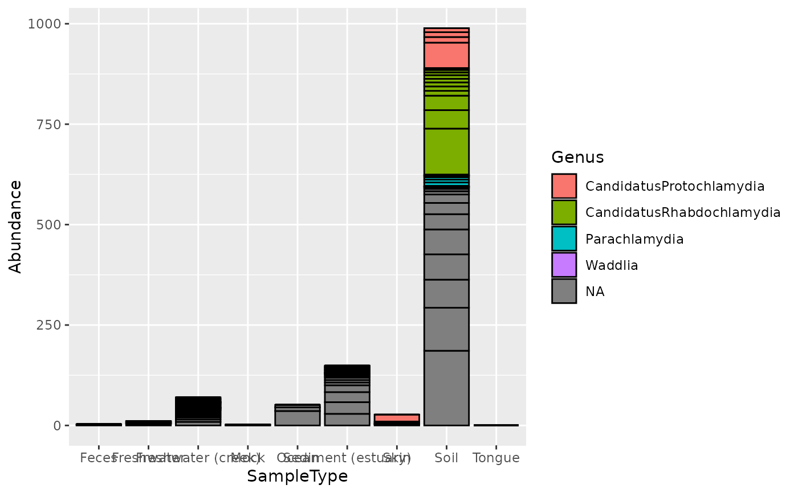

The psmelt function is a specialized melt function for melting phyloseq
objects (instances of the phyloseq class), usually for producing graphics
with ggplot2::ggplot2. The naming conventions used in downstream phyloseq
graphics functions have reserved the following variable names that should
not be used as the names of sample_variables() or taxonomic
rank_names(). These reserved names are c("Sample", "Abundance", "OTU").
Also, you should not have identical names for sample variables and taxonomic
ranks. That is, the intersection of the output of the following two
functions sample_variables(), rank_names() should be an empty vector
(e.g. intersect(sample_variables(physeq), rank_names(physeq))). All of
these potential name collisions are checked-for and renamed automatically
with a warning. However, if you (re)name your variables accordingly ahead of
time, it will reduce confusion and eliminate the warnings.
psmelt(physeq, as = getOption("speedyseq.psmelt_class"))
| physeq | |
|---|---|
| as | Class of the output table; see Details. |
A table of the specified class
The as argument allows choosing between three classes for tabular data:
data.frame is chosen by "data.frame" or "df"
data.table is chosen by "data.table" or "dt"
tbl_df is chosen by "tbl_df", "tbl", or "tibble"
The default is "data.frame" and can be overridden by setting the "speedyseq.psmelt_class" option.
Note that "melted" phyloseq data is stored much less efficiently, and so RAM
storage issues could arise with a smaller dataset (smaller number of
samples/OTUs/variables) than one might otherwise expect. For common sizes
of graphics-ready datasets, however, this should not be a problem. Because
the number of OTU entries has a large effect on the RAM requirement, methods
to reduce the number of separate OTU entries -- for instance by
agglomerating OTUs based on phylogenetic distance using tip_glom() -- can
help alleviate RAM usage problems. This function is made user-accessible for
flexibility, but is also used extensively by plot functions in phyloseq.
data("GlobalPatterns") gp.ch = subset_taxa(GlobalPatterns, Phylum == "Chlamydiae") mdf = psmelt(gp.ch) nrow(mdf)#> [1] 546#> [1] 17#> [1] "OTU" "Sample" #> [3] "Abundance" "X.SampleID" #> [5] "Primer" "Final_Barcode" #> [7] "Barcode_truncated_plus_T" "Barcode_full_length" #> [9] "SampleType" "Description" #> [11] "Kingdom" "Phylum" #> [13] "Class" "Order" #> [15] "Family" "Genus" #> [17] "Species"#> [1] "436" "243" "84" "417" "395" "458"# Create a ggplot similar to library("ggplot2") p = ggplot(mdf, aes(x=SampleType, y=Abundance, fill=Genus)) p = p + geom_bar(color="black", stat="identity", position="stack") print(p)